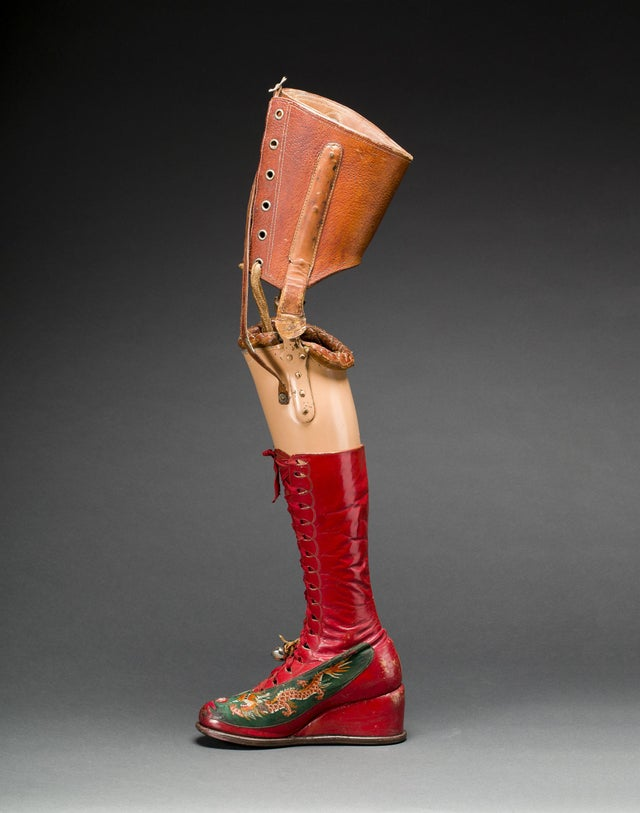
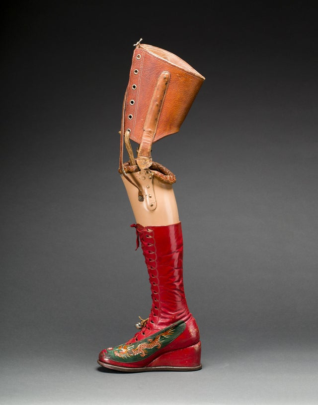

AMERIQUE


Frida Kahlo est probablement le peintre mexicain le plus connu dans le pays et à l’étranger. Son nom complet était Magdalena Carmen Frida Kahlo Calderón. Elle est née le 6 juillet 1907 (bien qu’elle disait qu’elle était de 1910) à Coyoacán, l’un des quartiers les plus beaux du Mexique, où elle a vécu avec ses parents et ses trois autres sœurs : Matilde, Adriana et Cristina. Elle fut l’héritière de deux cultures riches, puisque sa mère faisait partie de la tradition familiale oaxaqueña et son père était photographe, d’ascendance judeo-hongroise, né en Allemagne.

 
